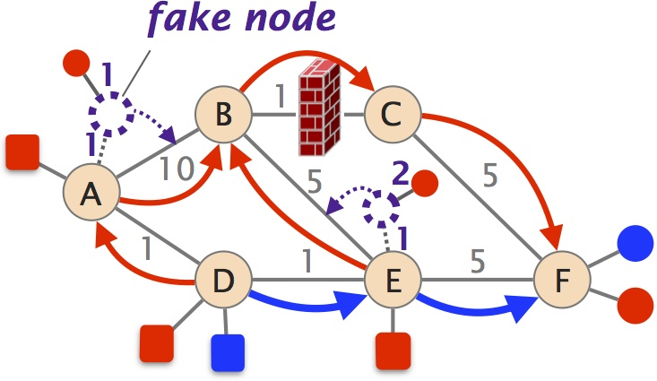
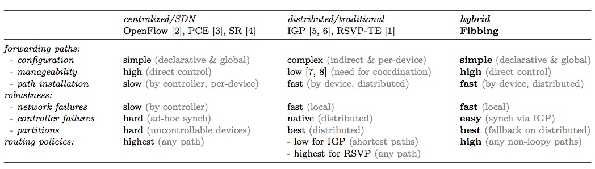

Fibbing is an architecture that enables central control over distributed routing. This way, it combines the advantages of SDN (flexibility, expressivity, and manageability) and traditional (robustness, and scalability) approaches.
Fibbing introduces fake nodes and links into an underlying link-state routing protocol, so that routers compute their own forwarding tables based on the augmented topology. Fibbing is expressive, and readily supports flexible load balancing, traffic engineering, and backup routes. Fibbing works with any unmodified routers speaking OSPF.

Fibbing won the Best Paper Award at SIGCOMM 2015!
Read the papers
Look at the presentations
Watch the demo
Get the code
To configure networks, operators need to manually configure each device by tweaking parameters influencing the behavior of distributed protocols. In addition, used network protocols tend to be inflexible. For example, protocols (IGPs) used for intra-domain routing computes paths as shortest-path over a shared weighted graph: This prevents operators from using arbitrary paths for different traffic flows. As a result, network resources are often used inefficiently, and few guarantees are offered on the final quality of service experienced by end users. Moreover, configuration processes aiming to optimize network performance is long and error-prone, and this degrades network reliability. It is indeed estimated that 50 to 80% of network disruptions are due to manual configurations.
Software-Defined Networking (SDN) promises to significantly improve network manageability by enabling direct, and centralized control over the network forwarding state via a well-defined Application Programming Interface (API). Fulfilling this promise though is a challenge for network operators as it often requires heavy modifications to their current network architecture, including: i) equipment upgrades, as the vast majority of the installed base of network equipments (e.g., routers) do not support SDN protocols; ii) new management, monitoring and provisioning systems; but also iii) the need for operators training as managing and debugging a SDN network requires essentially completely different skill sets. Finally, full centralization of network control comes with scalability and robustness challenges.

We run our Fibbing controller in a small network with 4 routers. By introducing one fake node and one fake link (at time 16), it has been able to forward different flows destined to the same router over different paths. As a consequence, all links are utilized and the total available bandwidth is increased.
This performance improvement would have been impossible with IGP. Also, Fibbing avoids control-plane complexities and data-plane overhead of tunnelling (e.g., MPLS-based) solutions.
We successively failed controller replicas and network links, and we verified Fibbing reaction to and recovery from failures. Our experiment confirmed that (i) replica failures have no impact on forwarded flows (until there is one replica still running), and (ii) Fibbing can adjust forwarding paths upon failures in about 1 second. Moreover, by delegating control to the underlying IGP, Fibbing can implement fail-close (flow 1) and fail-open (flow 2) semantics upon partitions, that is, denying connectivity or keeping it as long as possible. Both fail-close and fail-open semantics are enforced within few seconds.
Is Fibbing a long-term solution? Yes
We believe Fibbing is here to stay. In the short run, Fibbing offers programmability and is easy to deploy, at very little cost. A network that ultimately needs even greater flexibility could deploy finer-grained SDN functionality at the edge, and solutions like Fibbing in the core. By combining the best of centralized and distributed routing, Fibbing fits the needs of the network core (flexibility, robustness, low overhead) better than current forwarding paradigms.
Does Fibbing makes networks harder to debug? No
Fibbing relies on ``tried and true'' protocols. This has several implications. First, Fibbing routing matches the current mental model of operators, a major advantage with respect to other SDN proposals. Moreover, Fibbing is compatible with any existing management, monitoring, and debugging tools. Finally, the Fibbing controller can expose a higher-level interface for debugging, including a mapping between the injected lies and their usage (matched requirements and how).
Does Fibbing sum the complexities of centralized and distributed approaches? No
Fibbing uses the underlying IGP in a very simple way. The IGP output is easy to predict and provides the controller with a powerful API to program routers. As a result, the design of the Fibbing controller is significantly simpler than for existing SDN controllers since heavy tasks such as path computation and topology maintenance are offloaded to the routers. Even basic primitives for controller replication and replica consistency are mainly delegated to current distributed routing protocols.
Does Fibbing impact security? No
The lies introduced by the Fibbing controller can easily be authenticated, like using MD5-based authentication.
Does Fibbing support service chaining and middleboxing? Partially
Fibbing can only program loop-free paths. However, forwarding loops can be encountered when steering traffic through a chain of middleboxes. These requirements \emph{can} be satisfied in Fibbing with local support from routers to break the loops. For instance, a router could match on the input interface in addition to the destination IP address using policy-based routing, a feature widely available on existing routers and provisioned centrally using BGP flowspec. Alternatively, middlebox traffic steering could be implemented through SDN functionality at the network edge, while still using Fibbing in the core.
Central Control Over Distributed Routing, SIGCOMM, London, UK, Aug 2015. Selected as Best Paper. (bibtex)
by Stefano Vissicchio, Olivier Tilmans, Laurent Vanbever, and Jennifer Rexford
Sweet Little Lies: Fake Topologies for Flexible Routing, HotNets, Los Angeles, CA, Oct 2014. (bibtex)
by Stefano Vissicchio, Laurent Vanbever, and Jennifer Rexford
Enabling SDN in old school networks with Software-Controlled Routing Protocols, Open Network Summit (Research Track). Santa Clara, CA, USA.
by Laurent Vanbever and Stefano Vissicchio
Hebrew University Networking Summer (June 2015)
by Laurent Vanbever
HotNets 2014 presentation (October 2014)
by Stefano Vissicchio
stefano dot vissicchio at uclouvain dot beolivier dot tilmans at uclouvain dot belvanbever at ethz dot chjrex at cs dot princeton dot edu